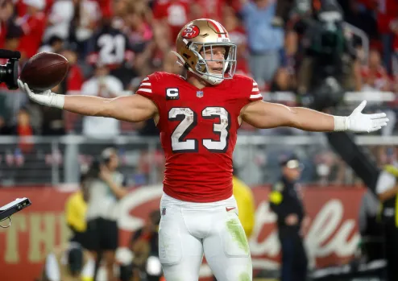

49ers’ Christian McCaffrey wins the Spotlight in 20-9 victory against the former team
By
California. The night was young and layered with roaring spirit, emotion, and sheer power as Christian McCaffrey took over the spotlight in the San Francisco 49ers’ 20-9 against the Carolina Panthers-his former team. At Levi’s Stadium, McCaffrey redefined career-defining plays and reminded the franchise that drafted him exactly what they gave up.
The MVP of the night, McCaffrey finished with 142 yards and a touchdown, shining as the most reliable playmaker on the field. Even though the 49ers struggled early, especially after Brock Purdy threw three first-half interceptions, it was McCaffrey’s mastery that steadied the offense and led the team to their eight win of the season.
After the game, McCaffrey reflected saying, “I’ve got nothing but respect for Carolina, but tonight was about showing what I’ve grown into here. This team believes in me, and I wanted to prove they were right.”
Going against the Carolina Panthers is no easy task for McCaffrey. Traded to San Francisco in 2022, he carried personal motivation into this match. And under the bright lights and screams, he showed his former team exactly what they lost that day. His third-quarter touchdown widened the gap, shifting the momentum toward San Francisco, and effectively closing all hopes for Carolina’s comeback.
The 49ers’ defense added to the victory, holding the Panthers without a touchdown and preventing them from taking advantage of Purdy's errors. With the strong defensive stand and McCaffrey’s impressive performance, the win of the 49ers was guaranteed and made the team continue its push of the season.